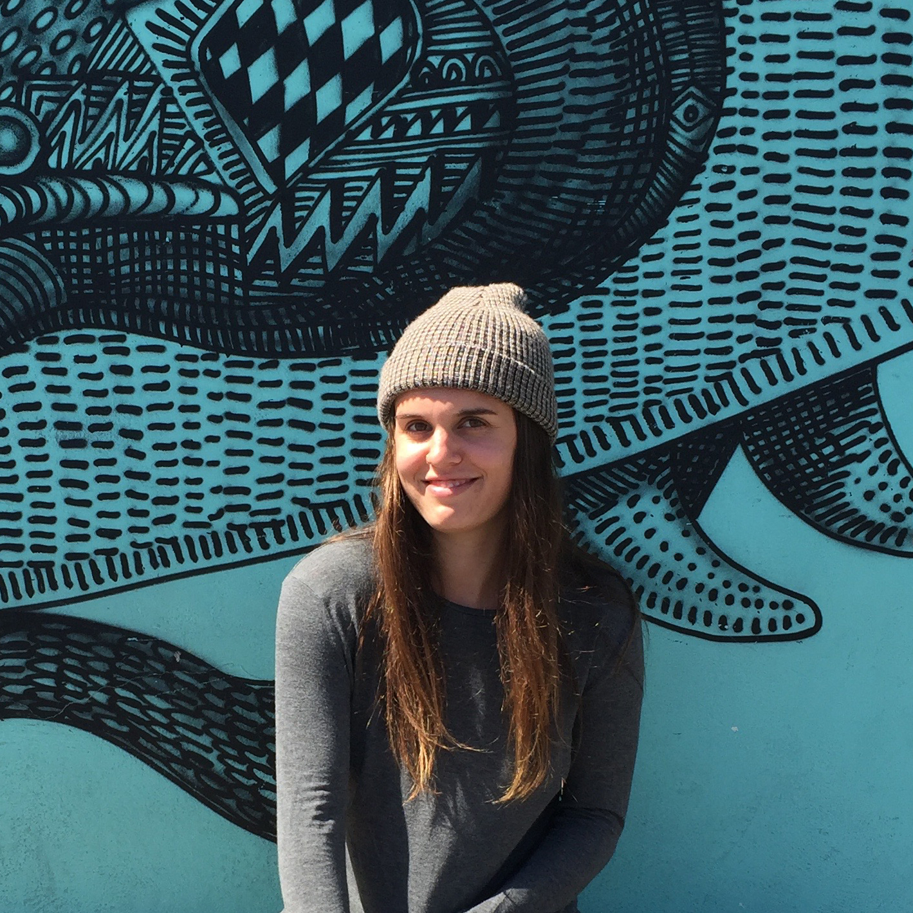

luciana.peterson@cca.edu
415-272-8829
San Francisco, CA
Lucy is a graphic design student at CCA. She transferred from American University in Washington, DC after her freshman year. Lucy grew up in the Bay Area and couldn't be happier to be back, making art and participating in the San Francisco community. As well as going to school she works at San Franpsycho, a local lifestyle brand, doing their buying and visual merchandizing. Must love birds.